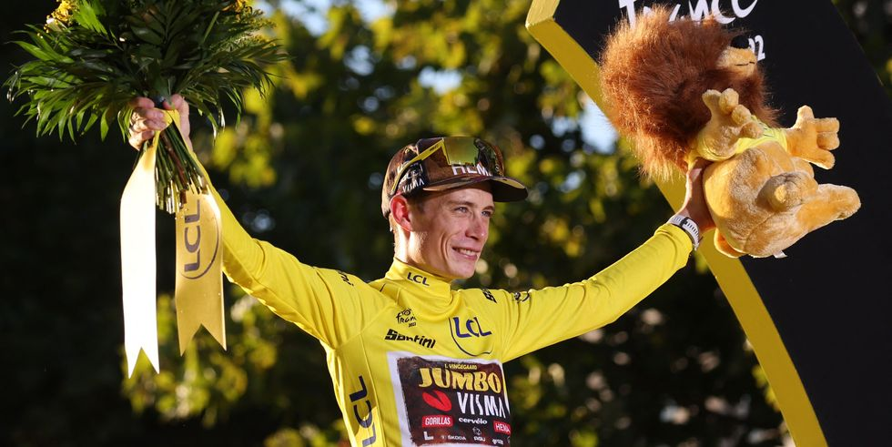

黃衫 總成績冠軍

2022環法總冠軍Jonas Vingegaard Rasmussen
(圖片版權 Getty Images)
(圖片版權 Getty Images)
最早的黃衫在1913年，材質為羊毛，由於當時物資匱乏，
整場賽事只有一件輪流穿，因此排名發生變動，就會享受到他人的味道。
根據各站的成績，每一站累計時間最短的選手就能披上黃衫；
暫居黃衫的選手得以帶著這份榮耀，與其他選手一較高下。